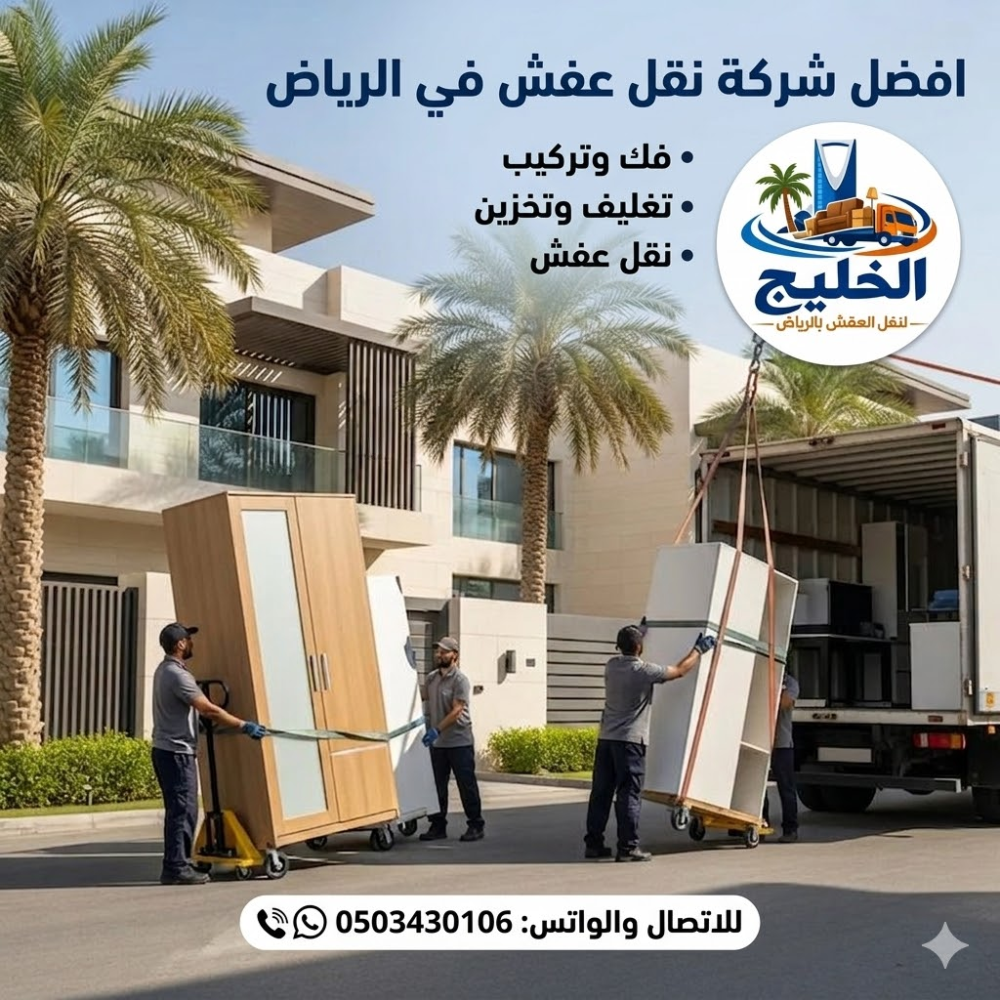

نقل عفش بالرياض مع الفك والتركيب والتغليف المجاني. عمالة فلبينية مدربة - أسطول سيارات حديث - ضمان سلامة الأثاث 100%. نقل عفش رخيص بالرياض بجودة لا تضاهى.
عاماً من الخبرة في نقل العفش
عملية نقل أثاث ناجحة
نقل عفش بالرياض 24 ساعة
هل تبحث عن شركة نقل عفش بالرياض تجمع بين الاحترافية والسعر المناسب؟ مع شركة الخليج، عملية نقل الأثاث لم تعد مرهقة. نقدم لك خدمة نقل عفش متكاملة بالرياض تبدأ من التغليف والفك وحتى إعادة التركيب والترتيب في المكان الجديد. أفضل شركات نقل العفش في الرياض تتفق على أن التخطيط الجيد هو مفتاح النجاح.
نحن افضل شركة نقل عفش بالرياض لأننا نضع سلامة مقتنياتك الثمينة على رأس أولوياتنا. فريقنا المدرب يتعامل مع كل قطعة أثاث بعناية فائقة، بدءًا من فك وتركيب غرف النوم والمطابخ وصولاً إلى نقل التحف والنجف والستائر بأمان تام. نقل أثاث داخل الرياض أو خارجه، كل ذلك بخبرة تمتد لأكثر من 15 عاماً.

إذا كنت تبحث عن أفضل شركة نقل عفش بالرياض بأسعار تنافسية، فإن شركة الخليج هي وجهتك المثالية. نقدم نقل عفش بالرياض بأسعار تبدأ من 250 ريال فقط للشقة الصغيرة، مع ضمان جودة الخدمة. ما يميزنا عن غيرنا من شركات نقل العفش بالرياض هو الشفافية التامة في التسعير، حيث لا توجد أي رسوم مخفية. نحن نؤمن أن نقل الأثاث بالرياض يجب أن يكون في متناول الجميع، لذلك صممنا باقاتنا لتناسب جميع الميزانيات. يمكنك الاطلاع على أرخص شركة نقل عفش في الرياض لمعرفة المزيد عن أسعارنا التنافسية. فريقنا يقدم خدمات نقل أثاث بالرياض مع الفك والتركيب والتغليف مجاناً ضمن الباقة الذهبية، مما يوفر عليك عناء البحث عن أكثر من جهة. سواء كنت بحاجة إلى نقل عفش فلل بالرياض أو نقل عفش شقق بالرياض، فإن أسعارنا ثابتة وعادلة. اتصل بنا الآن على 0503430106 للحصول على معاينة مجانية وتقييم دقيق لكمية الأثاث، وسنقدم لك عرض سعر فوري ومفصل.
تعتبر شركة نقل عفش بالرياض من أكثر الخدمات طلباً في العاصمة، خاصة مع كثرة التنقل بين الأحياء. نحن ندرك أن الميزانية تشكل عاملًا مهمًا في اختيار العميل، لذلك نقدم نقل عفش رخيص بالرياض دون المساس بجودة الخدمة. عروضنا تشمل دينا نقل عفش بالرياض للرحلات الصغيرة بأسعار اقتصادية، كما نوفر سيارات نقل عفش بالرياض كبيرة مجهزة لنقل الفلل والقصور. لا تتردد في الاتصال بنا ومقارنة أسعارنا مع أي شركة أخرى، وستدرك أننا أفضل شركة نقل عفش بالرياض من حيث القيمة مقابل المال. نقل عفش رخيص في الرياض أصبح حقيقة مع شركة الخليج، حيث نقدم خصومات تصل إلى 35% على أول طلب.
نقدم في شركة الخليج خدمات نقل أثاث بالرياض مع الفك والتركيب والتغليف بشكل متكامل. نبدأ بفك الأثاث باستخدام أدوات كهربائية حديثة، مع فرز وتنظيم القطع لتسهيل عملية التركيب لاحقاً. فك وتركيب غرف النوم والمطابخ يتم على أيدي فنيين متخصصين لديهم خبرة في التعامل مع جميع أنواع الأثاث الحديث والكلاسيكي. نستخدم أفضل مواد تغليف العفش مثل البلاستيك الفقاعي والكراتين المقواة والبطانيات السميكة. نقل العفش داخل الرياض بأحدث السيارات المجهزة يضمن لك وصول أثاثك بحالة ممتازة. يمكنك قراءة المزيد عن مواد تغليف العفش التي نستخدمها لضمان الحماية الكاملة.
نحن نقدم نقل عفش مع الفك والتركيب بالرياض مجاناً ضمن الباقة الذهبية، حيث نقوم بتفكيك غرف النوم والمجالس والمطابخ بالكامل، ثم إعادة تركيبها في المنزل الجديد بنفس الدقة. خدماتنا تشمل أيضاً فك وتركيب جميع أنواع الأثاث الحديث والكلاسيكي، بما في ذلك الأثاث الإيكيا. نقل أثاث داخل الرياض يتم عبر فريق مدرب يعرف كيفية التعامل مع المساحات الضيقة والسلالم. نستخدم ونش رفع للأدوار العالية لتجنب أي ضرر قد يحدث أثناء الصعود والنزول على السلالم. كل هذه الخدمات تقدم بأسعار تنافسية تجعلنا شركة نقل عفش بالرياض بخبرة طويلة وأسعار رخيصة.
نحرص في شركة الخليج على تحديث أسطولنا باستمرار، حيث نقدم نقل العفش داخل الرياض بأحدث السيارات المجهزة. تمتاز سيارات النقل لدينا بأرضيات مبطنة، ورافعات هيدروليكية، وسيور ربط لتثبيت الأثاث ومنع حركته أثناء النقل. دينا نقل عفش بالرياض متاحة 24 ساعة للطلبات العاجلة والطارئة. نغطي جميع أحياء الرياض، من شمالها إلى جنوبها وشرقها إلى غربها. نقل أثاث خارج الرياض متاح أيضاً لجميع مدن المملكة، مع ضمان الوصول الآمن وفي الوقت المحدد. يمكنك معرفة المزيد عن دليل أحياء الرياض لنقل العفش لمعرفة المناطق التي نغطيها.
نحن نقدم سيارات نقل عفش بالرياض بأحجام مختلفة تناسب جميع الاحتياجات، بدءاً من الدينا الصغير للشقق الصغيرة وصولاً إلى الشاحنات الكبيرة للفلل والقصور. شركة نقل عفش بالرياض توفر ضمان ضد الكسر والخدوش، وهذا الضمان يشمل جميع مراحل النقل بدءاً من التحميل وحتى التنزيل والتركيب. نوصي عملاءنا بالاطلاع على كيفية حماية العفش أثناء النقل للحصول على نصائح إضافية. كل سيارة مجهزة بنظام تحديد المواقع GPS لتتبع الرحلة والتأكد من الالتزام بالمسار المحدد. ثق بنا في نقل أثاث آمن بالرياض، لأن سلامة ممتلكاتك هي مسؤوليتنا.
الثقة هي أساس العلاقة مع العملاء، ولذلك فإن شركة نقل عفش بالرياض توفر ضمان ضد الكسر والخدوش مكتوباً وموقعاً. نضمن لك وصول أثاثك بحالته التي كان عليها قبل النقل، وفي حالة حدوث أي ضرر (لا قدر الله) نتحمل المسؤولية الكاملة. نقل أثاث فلل وشقق ومكاتب بالرياض باحترافية هي مهمتنا، ونلتزم بتقديم أعلى مستويات الجودة. أخطاء عند نقل العفش يجب تجنبها، ونحن نضمن لك عدم ارتكابها مع فريقنا المدرب. الضمان يشمل جميع مراحل النقل: الفك، التغليف، التحميل، النقل، والتنزيل، وإعادة التركيب.
نحن ندرك أن بعض شركات نقل العفش تقدم وعوداً لا تلتزم بها، ولكننا في الخليج نثبت صدق كلمتنا من خلال أكثر من 12 ألف عملية نقل ناجحة. شركة متخصصة في تغليف ونقل الأثاث بالرياض، نستخدم أفضل مواد التغليف وأحدث التقنيات لتجنب أي خدوش أو كسر. نقل أثاث مع عمالة مدربة بالرياض هي ضمانة إضافية لك، حيث يتم تدريب العمالة على التعامل مع الأثاث الحساس والقطع الثمينة. إذا كنت تبحث عن شركة نقل عفش بالرياض مضمونة، فقد وجدت ضالتك. اتصل بنا اليوم لتجرب الفرق بنفسك.
نحن نقدم نقل أثاث فلل وشقق ومكاتب بالرياض باحترافية تامة، حيث نخصص لكل نوع من أنواع النقل فريقاً مدرباً على التعامل مع متطلباته. نقل عفش فلل بالرياض يتطلب خبرة في التعامل مع القطع الكبيرة والتحف الثمينة، وفريقنا لديه هذه الخبرة. أما نقل عفش شقق بالرياض فنحن نقدم باقات مرنة تناسب المساحات الصغيرة والمتوسطة. نقل عفش مكاتب بالرياض يتم وفق جدول زمني محدد لتقليل وقت التوقف عن العمل، مع فك وتركيب المكاتب والأجهزة المكتبية. يمكنك الاطلاع على أفضل شركة تخزين عفش في الرياض إذا كنت بحاجة إلى تخزين أثاثك مؤقتاً.
نقدم أيضاً نقل عفش ايكيا بالرياض بواسطة فنيين محترفين، حيث أن أثاث ايكيا يتطلب فناً خاصاً في الفك والتركيب نظراً لطبيعة تصميمه. فك وتركيب أثاث ايكيا يتم باستخدام الأدوات المخصصة لذلك وبسرعة فائقة. نقل موبيليا بالرياض خدمة أخرى نتميز بها، حيث نتعامل مع الأثاث المستورد الفاخر بحرص وعناية. شركة شحن أثاث بالرياض توفر خدمات الشحن لجميع مدن المملكة، بما في ذلك شحن أثاث من الرياض لجدة أو الدمام أو مكة. لا تتردد في الاتصال بنا على 0503430106 للحصول على خدمة احترافية تناسب احتياجاتك.
نحن نقدم دينا نقل عفش بالرياض متاحة 24 ساعة لخدمتك في أي وقت تحتاج فيه إلى نقل عاجل. سواء كانت الساعة الثانية فجراً أو ظهر الجمعة، فريقنا جاهز لتلبية طلبك. نقل عفش سريع وآمن داخل جميع أحياء الرياض هو ما نعدك به، حيث نصل إليك في أقل من 30 دقيقة في أي حي من أحياء العاصمة. ونش رفع عفش بالرياض متوفر أيضاً للأدوار العالية والشقق التي لا تحتوي على مصاعد. نقل عفش مع فك وتركيب تكييف في الرياض خدمة إضافية نقدمها بأسعار رمزية.
خدمة الطوارئ على مدار الساعة تجعلنا الخيار الأول لكل من يبحث عن نقل عفش بالرياض 24 ساعة. لدينا أكثر من 10 دينا وسيارة نقل في الخدمة على مدار اليوم، مما يضمن استجابتنا السريعة لجميع الطلبات. نقل أثاث آمن بالرياض مع سياراتنا المجهزة يضمن لك عدم تأثر أثاثك بأي اهتزازات أو صدمات. أفضل أسعار نقل العفش بالرياض نقدمها مع خدمة الطوارئ أيضاً، فلا داعي للقلق بشأن التكلفة الإضافية. اتصل بنا الآن على 0503430106 لأي طلب عاجل، وسنكون عند حسن ظنك.
لا تقتصر خدماتنا على العاصمة فقط، بل نقدم نقل عفش خارج الرياض لجميع مدن المملكة مثل جدة، الدمام، مكة، المدينة المنورة، والقصيم. نقل أثاث خارج الرياض يتم عبر شاحنات مخصصة للنقل الطويل، مجهزة بأحدث أنظمة التثبيت والحماية. شحن أثاث من الرياض لجدة هو أحد أكثر الطلبات شيوعاً، وننفذه باحترافية عالية ومواعيد محددة. نقل عفش بين المدن يحتاج إلى تخطيط دقيق، وفريقنا لديه الخبرة الكافية لضمان وصول أثاثك بحالة ممتازة. يمكنك الاطلاع على أفضل وقت لنقل العفش في الرياض للتخطيط الجيد.
نحن نقدم شركة نقل عفش بالرياض بخدمات تمتد إلى جميع أنحاء المملكة، مع أسعار شحن تنافسية وضمان شامل. نقل عفش بين المدن يشمل التغليف الاحترافي والفك والتركيب أيضاً، بنفس الجودة التي نقدمها للنقل الداخلي. فريقنا يتابع الشحنة من الباب إلى الباب، ويتواصل معك في كل مرحلة لإطلاعك على آخر المستجدات. إذا كنت تنتقل من الرياض إلى مدينة أخرى، فنحن الخيار الأمثل لك. اتصل بنا اليوم على 0503430106 واحصل على عرض سعر فوري لشحن عفشك إلى أي مدينة في المملكة.
نوفر خدمة نقل عفش مع ونش رفع بالرياض للأدوار العالية، وهي خدمة ضرورية للشقق التي لا تحتوي على مصعد أو للأثاث الثقيل الذي لا يمكن صعوده عبر السلالم. ونش رفع عفش بالرياض يتم تشغيله بواسطة فنيين متخصصين، مع استخدام أحزمة أمان وسيور ربط لضمان سلامة الأثاث وسلامة العمال. نصائح قبل نقل العفش تشمل التأكد من توفر ونش رفع إذا كنت تسكن في دور عالٍ. نحن نستخدم ونشاً كهربائياً حديثاً يمكنه رفع أثقال تصل إلى 500 كيلوغرام، مما يجعله مناسباً لنقل الثلاجات الكبيرة، وغرف النوم الثقيلة، والبيانو، والخزائن الحديدية.
خدمة ونش رفع عفش بالرياض متاحة بشكل منفصل أو ضمن باقة النقل الشامل. ننصح بها بشدة إذا كنت تنتقل من أو إلى دور عالٍ، لأنها توفر عليك الجهد وتحمي أثاثك من التلف. نقل أثاث آمن بالرياض يعني استخدام الوسائل المناسبة لكل حالة، والونش هو الحل الأمثل للحالات الصعبة. نحن نقدم هذه الخدمة بأسعار مدروسة، ويمكنك الحصول على خصم عند حجزها مع خدمة النقل الأساسية. اتصل بنا على 0503430106 لمعرفة المزيد عن خدمة الونش وحجز موعد.
نقدم في شركة الخليج خدمة فك وتركيب جميع أنواع الأثاث الحديث والكلاسيكي بواسطة فنيين متخصصين. سواء كان أثاثك مودرن بسيط التصميم أو كلاسيكياً معقد التفاصيل، فإن فريقنا لديه الخبرة اللازمة للتعامل معه. فك وتركيب أثاث بالرياض يشمل جميع القطع: غرف النوم، المجالس، السفرة، المكاتب، والخزائن. أفضل طرق تغليف العفش تبدأ بالفك الصحيح، حيث نقوم بتنظيم وتوثيق كل قطعة لتسهيل عملية التركيب لاحقاً. نستخدم أدوات كهربائية حديثة لتسريع العملية وضمان الدقة.
نحن نقدم نقل عفش ايكيا بالرياض بخبرة عالية، حيث أن أثاث ايكيا يتطلب فهماً خاصاً لطريقة فكه وتركيبه. تغليف عفش بالرياض يتم بعد عملية الفك، حيث نغلف كل قطعة على حدة باستخدام أفضل المواد. تخزين أثاث بالرياض هو خدمة تكميلية نقدمها إذا كنت بحاجة إلى تخزين أثاثك لفترة مؤقتة. فريقنا يضمن لك إعادة تركيب الأثاث في المنزل الجديد بنفس الكفاءة، مع معايرة الأبواب والأدراج والتأكد من عملها بشكل صحيح. ثق بنا في فك وتركيب الأثاث، واتصل على 0503430106 لحجز خدمتك.
تعتبر شركة نقل عفش بالرياض بخبرة طويلة وأسعار رخيصة هي حلم كل عميل، وهذا الحلم تحقق مع شركة الخليج. بخبرة تمتد لأكثر من 15 عاماً في مجال نقل العفش، تعلمنا كيفية تقديم خدمة متميزة بتكلفة مناسبة. نقل الأثاث بأحدث مواد التغليف للحماية الكاملة لا يعني بالضرورة ارتفاع السعر، فبفضل علاقاتنا الممتازة مع موردي مواد التغليف، نستطيع الحصول على أفضل المواد بأسعار مخفضة، ونوفر لك هذه التوفيرات. أفضل أسعار نقل العفش بالرياض تجدها معنا، مع ضمان الجودة والاحترافية.
نحن نقدم نقل عفش بالرياض مع التغليف بأسعار تبدأ من 250 ريال، وتشمل العمالة المدربة وسيارات النقل الحديثة. شركة نقل عفش بالرياض تقدم عروضاً موسمية وخصومات تصل إلى 35% على أول طلب. تغليف عفش بالرياض مجاني مع الباقة الذهبية، مما يوفر عليك تكلفة شراء مواد التغليف. إذا كنت تبحث عن ارخص شركة نقل عفش بالرياض دون التنازل عن الجودة، فإن شركة الخليج هي خيارك الأمثل. اتصل بنا الآن على 0503430106 للحصول على عرض سعر لا يُقارن، واكتشف لماذا آلاف العملاء يثقون بنا سنة بعد سنة.
نقدم نقل اثاث بالرياض عمالة فلبينية مدربة على أعلى مستوى لفك وتركيب جميع أنواع الأثاث.
سيارات نقل كبيرة ومغلقة ومجهزة بأرضيات مبطنة وسيور ربط لحماية الأثاث من الاهتزازات.
نستخدم أفضل مواد التغليف (بلاستيك فقاعي، كراتين، بطانيات) مجاناً مع أي طلب نقل.
نقدم ضماناً كتابياً على سلامة الأثاث ضد الكسر أو الخدش أثناء النقل والفك والتركيب.
خدمة طوارئ على مدار الساعة - نعمل في جميع الأوقات لتلبية احتياجاتك العاجلة.
نحمل تراخيص رسمية وتأمين على الأثاث - نضمن لك نقل موثوق وآمن 100%.
| نوع الخدمة | التفاصيل | السعر (ريال) |
|---|---|---|
| نقل عفش شقة صغيرة | غرفة نوم + مجلس + أجهزة كهربائية | 250 - 450 |
| نقل عفش شقة متوسطة | غرفتي نوم + مجلس + مطبخ + مكيفات | 500 - 850 |
| نقل عفش فيلا / دور كامل | 3 غرف فأكثر + مجلسين + تحف ونجف | 1000 - 1800 |
| الباقة الذهبية (فك+تغليف+نقل+تركيب) | خدمة متكاملة لشقة متوسطة | 500 - 850 (شاملة كل شيء) |
| ونش رفع عفش | للأدوار العالية أو الأثاث الثقيل | 200 - 400 |
| تغليف فقط (بدون نقل) | باستخدام أفضل المواد | 150 - 300 |
| نقل عفش خارج الرياض | جدة / الدمام / مكة | حسب الاتفاق والمعاينة |
* الأسعار تشمل العمالة والنقل، مع خصم 35% على أول طلب. للحصول على عرض سعر دقيق، يرجى الاتصال بنا للمعاينة المجانية.
نقدم خدمات نقل عفش شمال الرياض، نقل عفش شرق الرياض، نقل عفش غرب الرياض، ونقل عفش جنوب الرياض. فريقنا يصل إليك في أقل من 30 دقيقة في جميع الأحياء.
تبدأ أسعار نقل العفش بالرياض من 250 ريال للشقق الصغيرة، وتصل إلى 1800 ريال للفلل الكبيرة. السعر يشمل العمالة والنقل. نوفر باقات شاملة (فك + تغليف + نقل + تركيب) بأسعار تبدأ من 500 ريال فقط.
شركة الخليج تُصنف ضمن افضل شركات نقل العفش بالرياض لخبرتها الطويلة (أكثر من 15 عاماً)، فريق العمل المدرب (عمالة فلبينية)، أسطول النقل الحديث، وخدمة الفك والتركيب والتغليف المجانية مع الضمان الشامل.
نعم، نقدم خدمة نقل عفش مع الفك والتركيب بالرياض مجاناً مع أي خدمة نقل. فريقنا المتخصص يستخدم أدوات كهربائية احترافية لضمان فك وتركيب آمن دون خدوش.
نعم، نوفر نقل اثاث بالرياض عمالة فلبينية مدربة على أعلى مستوى. عمالتنا تتميز بالدقة، السرعة، والأمان في التعامل مع جميع أنواع الأثاث.
نعم، نقدم خدمة نقل عفش بالرياض 24 ساعة على مدار الأسبوع. نحن متاحون لخدمتك في أي وقت، حتى في أيام العطل والإجازات الرسمية.
نعم، نقدم خدمة تغليف احترافية باستخدام أفضل المواد مثل البلاستيك الفقاعي والكراتين المقواة والبطانيات السميكة، وذلك مجاناً ضمن الباقة الذهبية.
نعم، نوفر ونش رفع عفش للأدوار العالية والشقق التي لا تحتوي على مصعد، مع فنيين متخصصين لضمان سلامة الأثاث.
نعم، نقدم نقل عفش خارج الرياض لجميع مدن المملكة مثل جدة، الدمام، مكة، المدينة المنورة، والقصيم، بأسعار تنافسية وضمان شامل.
تكلفة نقل شقة صغيرة (غرفة نوم واحدة) تبدأ من 250 ريال، والشقة المتوسطة (غرفتي نوم) تبدأ من 500 ريال. السعر يشمل العمالة والنقل.
نعم، نوفر مستودعات تخزين آمنة ومؤمنة بالكامل لحفظ أثاثك لفترات طويلة أو قصيرة، مع سهولة الوصول إليه في أي وقت.
نعم، نغطي جميع أحياء شمال الرياض مثل الملقا، النرجس، الياسمين، والعقيق، وصولاً إلى أي حي في العاصمة.
يمكنك الاتصال بنا على 0503430106 وسنرسل فريقاً للمعاينة المجانية وتقييم كمية الأثاث، ثم نقدم لك عرض سعر مفصل وشفاف.
نعم، نقدم ضماناً مكتوباً على سلامة الأثاث ضد الكسر والخدوش، وهذا الضمان ساري طوال فترة النقل وحتى إعادة التركيب.
نعم، لدينا فنيون متخصصون في فك وتركيب أثاث ايكيا، حيث أن تصميم هذه القطع يتطلب خبرة خاصة و أدوات مخصصة.
نعم، نقدم خصماً خاصاً يصل إلى 35% على أول طلب، وخصومات إضافية عند حزم خدمات متعددة مثل النقل + التخزين أو النقل + الفك والتركيب.
اتصل بنا الآن للحصول على معاينة مجانية وخصم 35% على أول طلب + تغليف مجاني لجميع القطع.